Using stars objects
stxplore_stars.Rmd
library(stxplore)
library(dplyr)
#>
#> Attaching package: 'dplyr'
#> The following objects are masked from 'package:stats':
#>
#> filter, lag
#> The following objects are masked from 'package:base':
#>
#> intersect, setdiff, setequal, union
library(tidyr)
library(cubelyr)
library(stars)
#> Loading required package: abind
#> Loading required package: sf
#> Linking to GEOS 3.10.2, GDAL 3.4.1, PROJ 8.2.1; sf_use_s2() is TRUEThe dataset
We use aerosol optical thickness data from the NASA Earth Observations (NEO) website https://neo.gsfc.nasa.gov. Let’s load the data first.
data("aerosol_australia")
aerosol_australia
#> stars object with 3 dimensions and 1 attribute
#> attribute(s):
#> Min. 1st Qu. Median Mean 3rd Qu. Max. NA's
#> aerosol_thickness 1 19 26 27.06014 33 254 13585
#> dimension(s):
#> from to offset delta refsys point values x/y
#> x 1 70 110 1 WGS 84 FALSE NULL [x]
#> y 1 70 0 -1 WGS 84 FALSE NULL [y]
#> date 1 13 NA NA Date NA 2019-12-01,...,2020-12-01Initial explorations
Let us visualise some snapshots first.
Spatial snapshots through time
aerosol_australia4 <- aerosol_australia %>%
slice(date, 1:4)
spatial_snapshots(aerosol_australia4)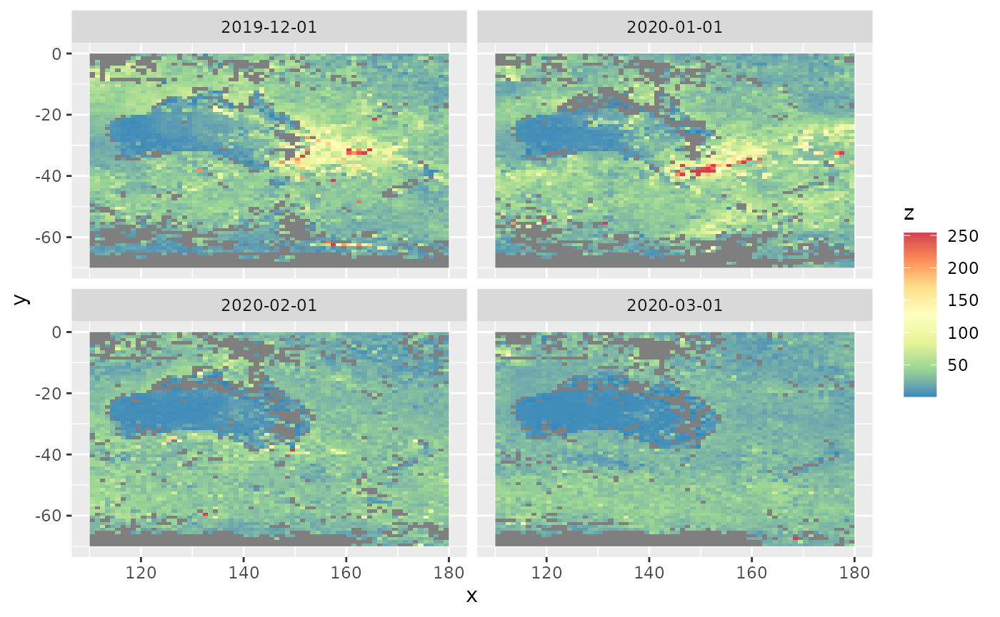
We see a plume of smoke on the south east of Australia in December 2019 and January 2020 due to the devastating bushfires.
Time series snapshots for different locations
To see how aerosol changes with time at different locations, we need to select a couple of locations first. We need to give the x and y values of the locations. The x values change from 110 to 180 and y values change from -1 to -70 (see the dataset section). Looking at the above figures, let’s pick locations (120, -20) and (150, -35)
xvals <- c(120, 150)
yvals <- c(-20, -35)
temporal_snapshots(aerosol_australia,
xvals = xvals,
yvals = yvals)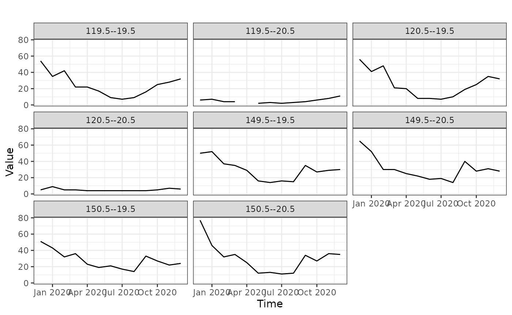
Even though we’ve given only 2 locations, we get more graphs. This is because the values that the data is recorded is not exactly equal to the locations we have specified. Because of that it picks the closest points to those locations we have specified.
Spatial empirical means (averaged over time)
Let’s look at spatial means, averaged over time. That is, for each location we take the mean over time and plot the mean values by latitude and longitude. The top 2 graphs below shows the mean aerosol values. Each point corresponds to a location.
From the map we see that high aerosol values correspond to the south east part of Australia and also parts outside Australia.
spmeans <- spatial_means(aerosol_australia)
autoplot(spmeans)
#> Warning: Removed 260 rows containing missing values (`geom_point()`).
#> Removed 260 rows containing missing values (`geom_point()`).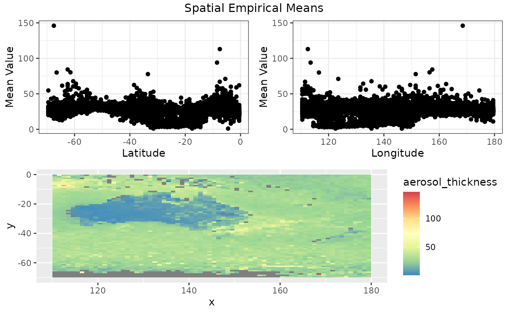
#> TableGrob (3 x 2) "arrange": 4 grobs
#> z cells name grob
#> 1 1 (2-2,1-1) arrange gtable[layout]
#> 2 2 (2-2,2-2) arrange gtable[layout]
#> 3 3 (3-3,1-2) arrange gtable[layout]
#> 4 4 (1-1,1-2) arrange text[GRID.text.716]Temporal empirical means (averaged over space)
How do the aerosol levels change over time, when averaged over locations? The temporal_means functions gives the insights.
tem <- temporal_means(aerosol_australia)
autoplot(tem)
#> Warning: Removed 6513 rows containing missing values (`geom_line()`).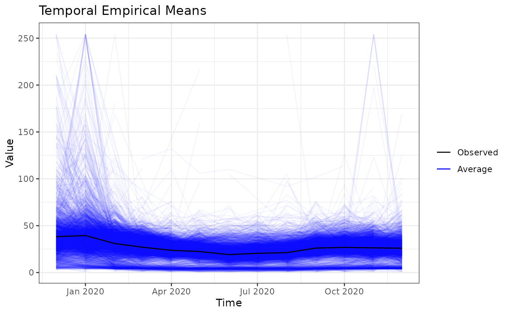
Hovmoller plots
Hovmoller plots collapses a spatio-temporal dataset (with 2 spatial dimensions) in one spatial dimension. In this case, we’re collapsing the latitude by averaging. For each longitude value and for each timestamp, we take the average aerosol values over all latitudes. Then we get the following plot.
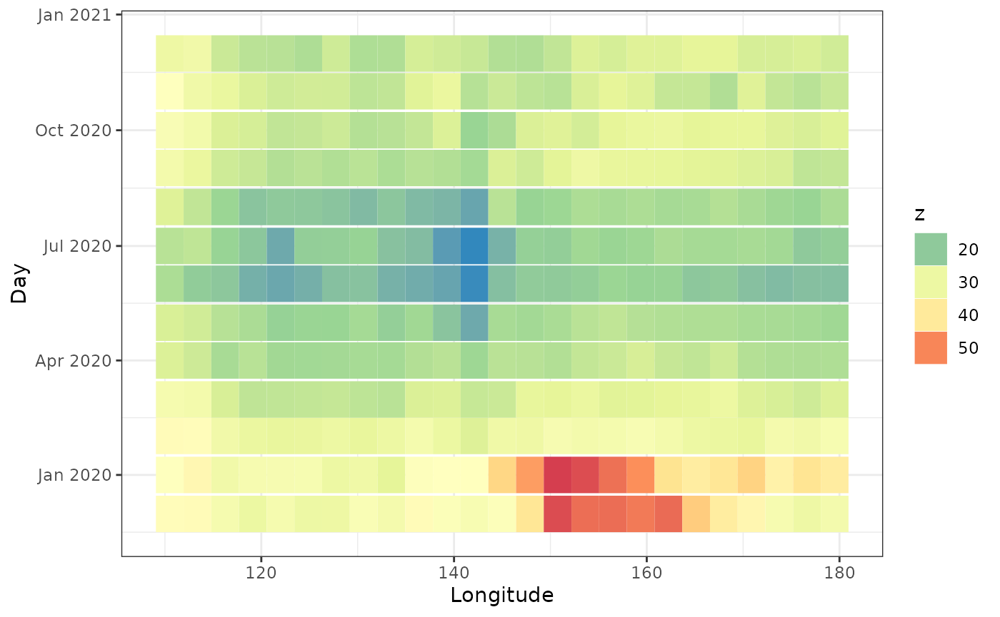
This plot shows the aerosol values were high in December and January for longitudes 140 - 165.
We can average over longitude values as well.
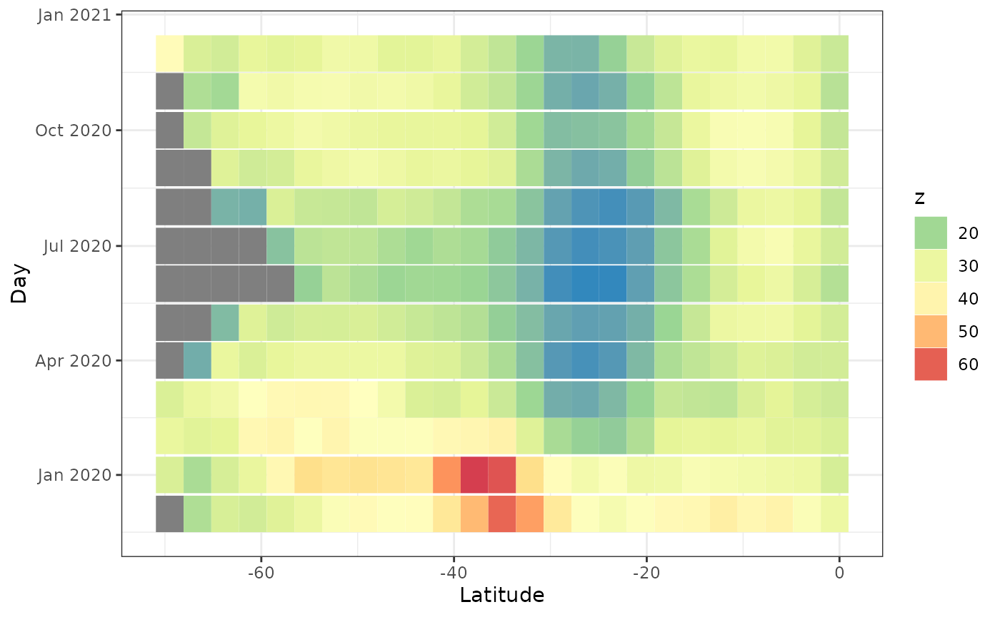
The grey values are missing values. We see the aerosol values are high around latitude 40.
Ridgeline plots
Ridgeline plots show the distribution of a quantity for several groups. It can be spatially grouped, for example by latitude or longitude, or grouped by time.
ridgeline(aerosol_australia, group_dim = 1)
#> Warning: `stat(x)` was deprecated in ggplot2 3.4.0.
#> ℹ Please use `after_stat(x)` instead.
#> ℹ The deprecated feature was likely used in the stxplore package.
#> Please report the issue to the authors.
#> Picking joint bandwidth of 2.01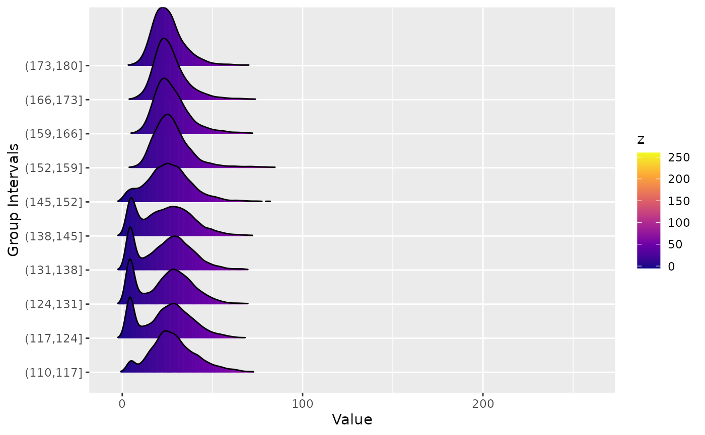
We see that for certain latitudes the aerosol distribution has a large tail.
Investigating the covariance
Empirical covarainces
Covariances let us know how related one variable/observation is to another variable/observation. In the case of spatio-temporal dataset, we generally have 3 dimensions: latitude, longitude and time. The empirical covariance matrix will tell us how the values depend on these dimensions.
aerosol_region <- aerosol_australia %>%
filter(x > 150, x < 170, y < -20, y> -40 )
# longitudinal strips
emp <- emp_spatial_cov(aerosol_region, num_strips = 2)
autoplot(emp)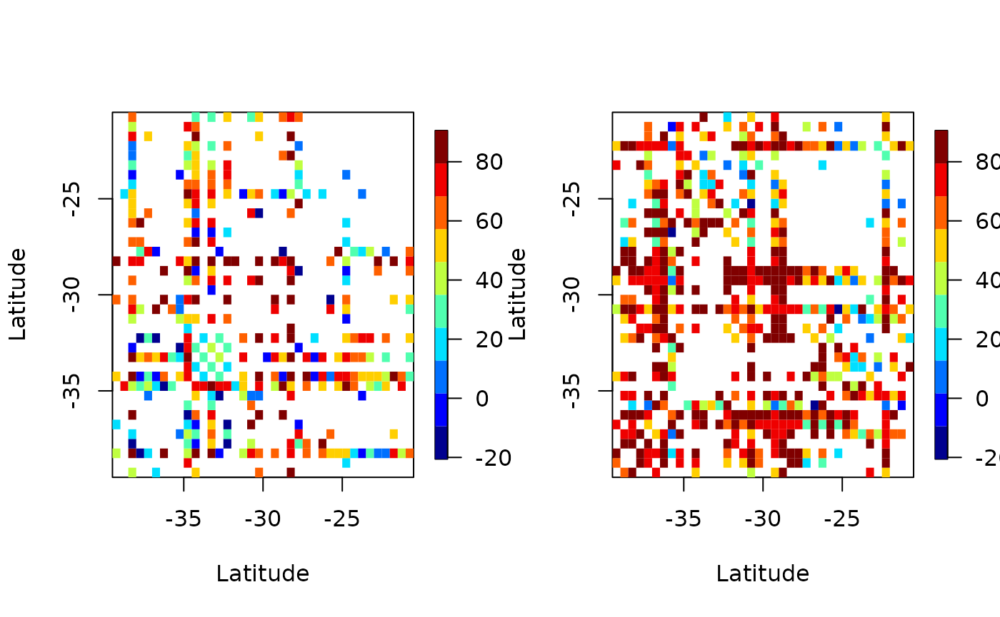
Above we’ve plotted the empirical covariance for 2 longitudinal plots. That is, we’ve broken up the dataset to 2 parts, by longitude, and have plotted the covariance.
# latitude strips
emp <- emp_spatial_cov(aerosol_region, num_strips = 2, lat_or_lon_strips = 'lat')
autoplot(emp)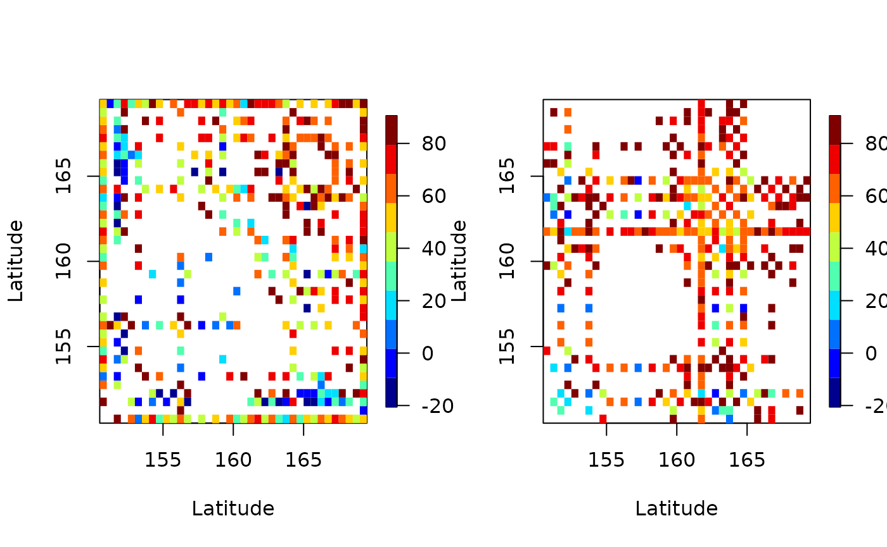
In both plots we see many white patches corresponding to NA entries. This is because for certain latitudes and longitudes there are missing values.
Space-time semivariograms
Semivariograms combine the latitude and longitude to find the distance between points and shows how the quantity of interest changes with distance and time. In the figure below we see that the variation of aerosol values between locations and time points close by is low (dark red/orange), and variation between locations and time points far away is high (light yellow). This is to be expected. But it is useful to know how similar observations close by (in time and space) are how dissimilar observations far away are.
semi <- semivariogram(aerosol_region)
#> Warning in variogramST(formula = object, locations = locations, data = data, :
#> strictly irregular time steps were assumed to be regular
autoplot(semi)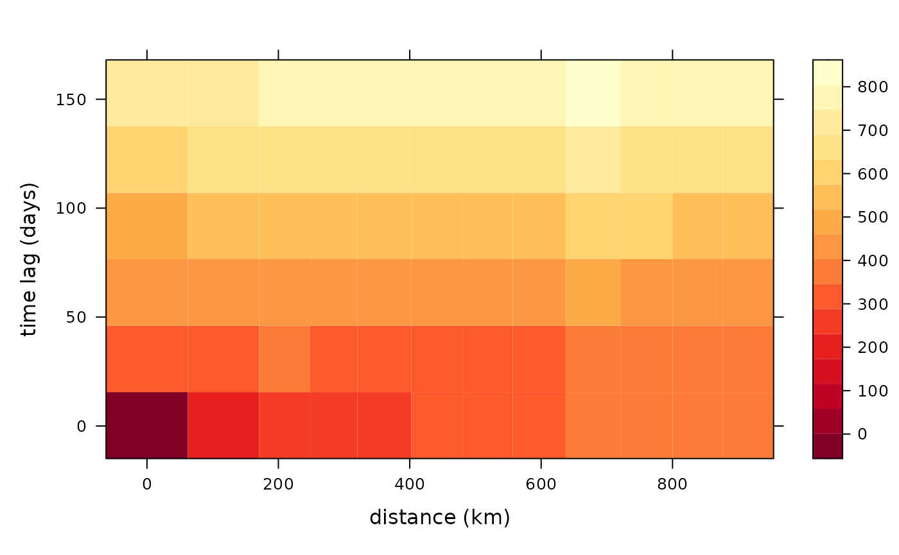
Computations similar to PCA
Empirical Orthogonal Functions (EOF)
Empirical Orthogonal Function (EOF) analysis is used to find covariability within a dataset (generally spatio-temporal) and depict it usin a fewer number of components. This is PCA for spatio-temporal data.
eoff <- emp_orth_fun(aerosol_australia)
autoplot(eoff, EOF_num = 1)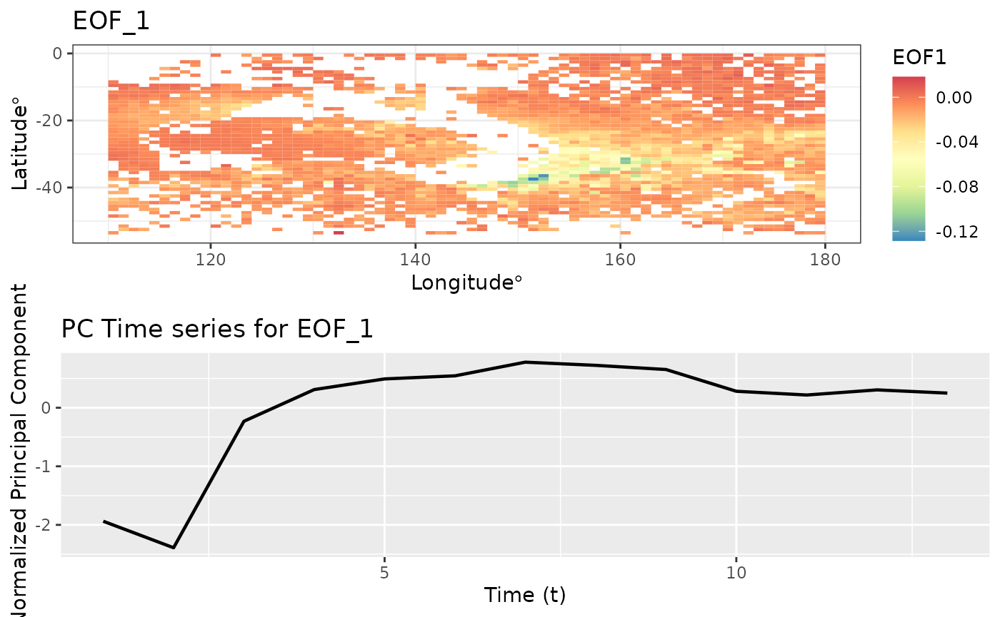
autoplot(eoff, EOF_num = 2)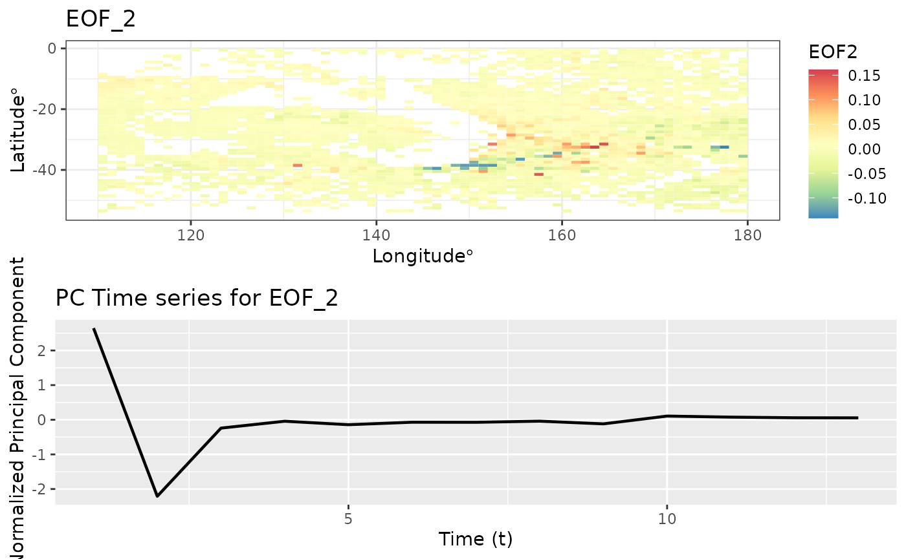
autoplot(eoff, EOF_num = 3)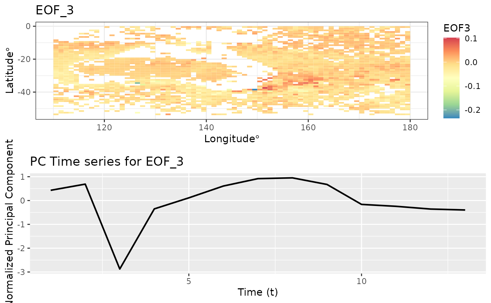
EOF analysis ensures that the PC time series are orthogonal in time. Let’s check the correlation between these t
pc1 <- eoff$pcts %>%
filter(EOF == 'X1') %>%
pull(nPC)
pc2 <- eoff$pcts %>%
filter(EOF == 'X2') %>%
pull(nPC)
cor(pc1, pc2)
#> [1] 2.300647e-16The matrix below shows the correlation between the first 3 PC time series. The off diagonal elements are very close to zero.
Spatio-temporal Canonical Correlation Analysis
Canonical correlation analysis identifies associations between two sets of variables/datasets. For spatio-temporal analysis we perform canonical correlation analysis on EOFs. (See Exploration using dataframes > Spatio-temporal CCA for more details.)
cc1 <- cancor_eof(aerosol_australia, lag = 6, n_eof = 4)
#> [1] "Canonical Correlation Analysis is carried out using a lagged dataset."
autoplot(cc1)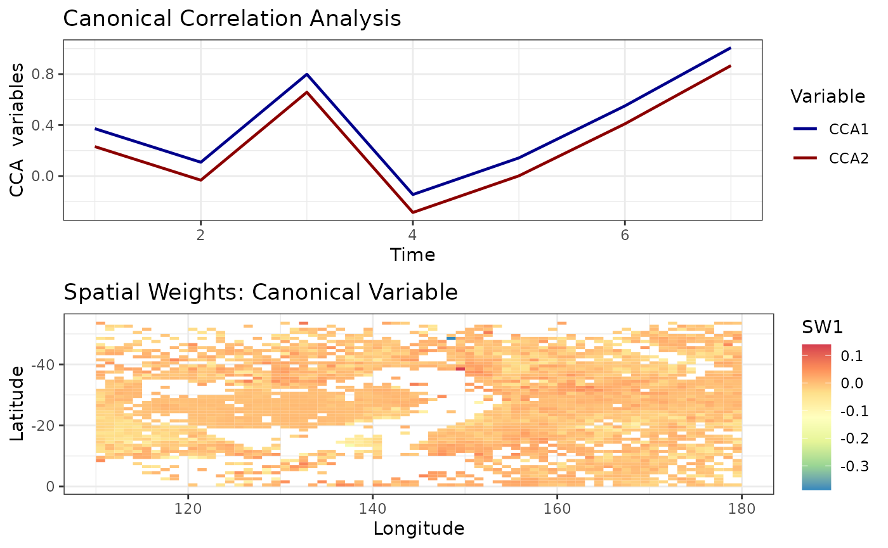